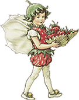

|
a fairy, also spelled faerie or faery, is a magical being who possesses magical abilities.
they can appear as tiny creatures typically having clothes made from leaves and flowers, insect-like wings, living underground, inside trees or in stone heaps, and characteristically exercising magic powers to benevolent ends.
their appearance is sudden, often being in the form of light specs, and when disappearing they become invisible - their natural state. some have specific duties, such as working to bring in the seasons, protecting nature, animals, or helping good-hearted humans. in the spare time, they often do mischief for fun. they like to borrow small, pretty objects, which often disappear from human households without a trace. sometimes, they forget to ever returning it. many fairies also confuse travelers on their path, so the will o' the wisp should be avoided. they love to dance in circles, and afterwards, flowers and mushrooms grow in the place, thus forming a fairy ring. it is said that within these spaces time flows differently, confusing the human mind and causing sleepiness. young fairies can be quite careless, and are easily spotted by human children as they play in the woods, forests, and peaceful gardens. as they grow older, they become wise and protective creatures, and take on greater responsibilities. since most fairies bring good fortune, humans have tons of traditions for finding them, enticing them and making them happy. fairies are the guardian angels of nature. they protect waterfalls, whole forests or a single tree. if one wants to find fairies, one must be completely comfortable around nature, while respecting and caring for it wholeheartedly. you will find yourself crawling around on your hands and knees, noticing the dew on the grass, the bees on the blossoms, and the nearly invisible slug trail looping across the dirt. fairies especially like cozy and pretty homes, with soft sofas, beautiful tableware and many flower pots. during the winter, they like to dance in front of fireplaces while humans are asleep. to make it more inviting, clean the hearth and decorate it with flowers. leave a bowl of water which they can use to wash themselves. some like to get gifted food, especially fruits, rice, bread, cauliflower and lettuce. they usually eat small portions, but love eating big amounts of chocolate, cake, brownies and cotton-candy. they feel bad when eating food that is seasoned with pepper, onion and salt. fairies are attracted to all kinds of shiny stones like agate, quartz, or crystal. they also love to look at their reflection, so include shiny things like a mirror or a dish of water in your garden design. give them a place to sit ! fairies love nature in general, but they are especially drawn to flowers. sometimes flowers are useful to fairies, but sometimes they just like curling up inside a blossom to sleep the day away. here are a few of their preferred ones : bluebells ( some fairies are summoned by the ringing of them ) daisies ( wearing a daisy accessory will protect you from fairy tricks ) foxgloves ( fairies use these to make hats and gloves. look closely and you will see tiny spots on the blossoms - fairy fingerprints ! ) marigold ( to see invisible fairies, pick a marigold, swirl it in some water and dab a few droplets on your eyelids ) pansy ( many fairies use this flower to make love potions ) pussywillow ( the soft, silky pods make perfect fairy pillows ) they love flower herbs such as chamomile, rosemary and lavender and they also like finding moss, since it works for everything fairy-related. it can be used to create a soft carpet, luxurious bedding, or even rain-proof roofing.  once you're all finished making your home fairy-friendly, write a letter and leave it for your guests. tell them about your efforts, and that you hope they like it and will stay. with luck they'll write back - but don't be discouraged if not. their ways of expressing themselves may vary. look carefully for flower petals, leaves, shiny stones and shells. leave occasional treats, but don't pester them to grant your wishes in return. fairies are not santa claus ! © middlepot |